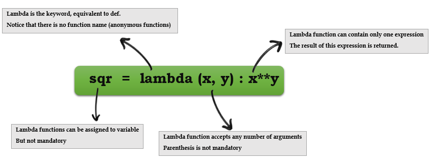

Functions
There are two ways of defining functions in Python.
- Traditonal
deffunctions. - Lambda functions
Traditional def functions
def function_name (param1, param2):
<indented code>
- The
defkeyword defines the function with its parameters within parentheses and its code indented. - The first line of a function can be a documentation string (“docstring”) that describes what the function does(Not mandatory but recommended). A docstring of any object can be retrived using
object.__doc__ - Variables defined in the function are local to that function.
- Python functions by default return variable type
Noneunless otherwise mentioned.
# Defines a "repeat" function that takes 2 arguments.
def repeat(s, exclaim):
"""
Returns the string 's' repeated 3 times.
If exclaim is true, add exclamation marks.
"""
result = s + s + s # can also use "s * 3" which is faster (Why?)
if exclaim:
result = result + '!!!'
return result
Lambda functions
Syntax: lambda arg1, arg2, …argN : expression using arguments.

- Python supports the creation of anonymous functions (i.e. functions that are not bound to a name) at runtime, using a construct called “lambda”.
- Lambda functions take any number of arguments but only has one expression, the result of this expression is returned.
>>> def f (x): return x**2
...
>>> print f(8)
64
>>>
>>> g = lambda x: x**2
>>>
>>> print g(8)
64
- Lambda functions can be used anywhere a function is expected, not necessary to assign it to a variable.
- You can pass lambda functions to other functions to do stuff(for example lambda function as key to sorted())
mult3 = filter(lambda x: x % 3 == 0, [1, 2, 3, 4, 5, 6, 7, 8, 9])
Using Lambda
Lambda funtions are good when they are short and as throw away functions. If you plan on doing anything remotely complex with it, put lambda away and define a real function.